Comprehensive verification and visual inspection report for EkPill. All artificial background wallpapers, synthetic gradient orbs, and fake IDE windows have been strictly removed. Only genuine product panel cutouts with subtle multi-layer elevation shadows and real damped spring physics are featured.
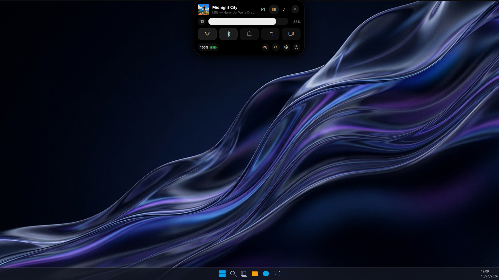
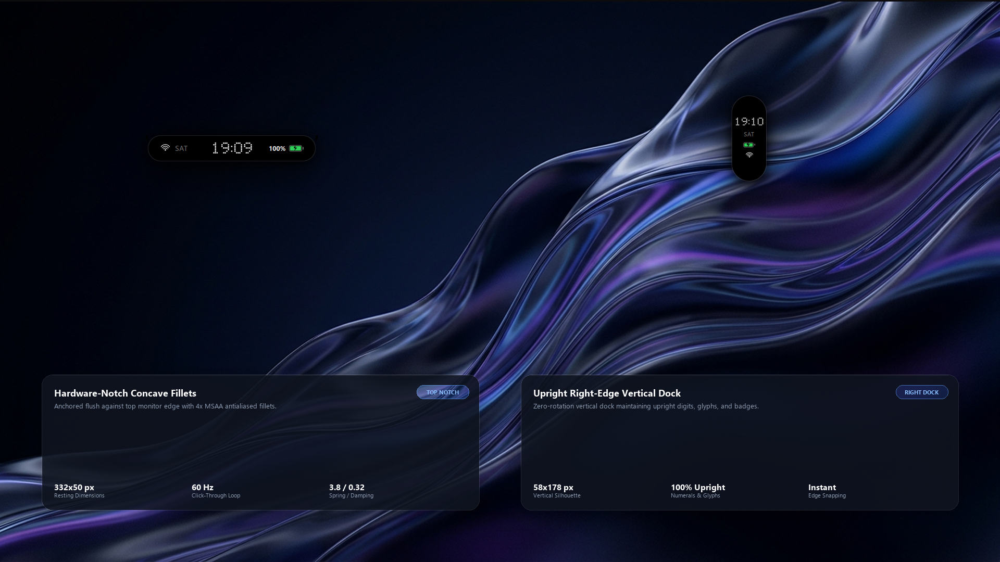
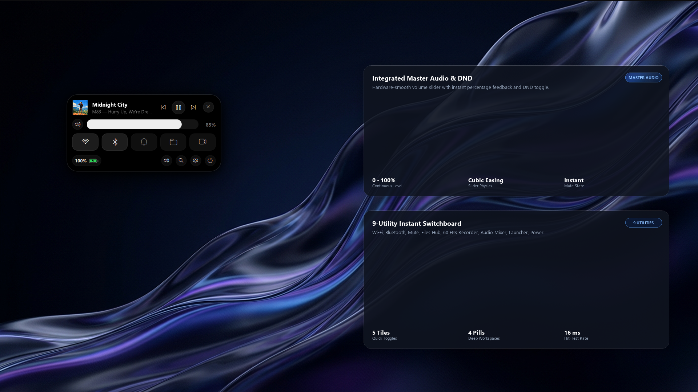
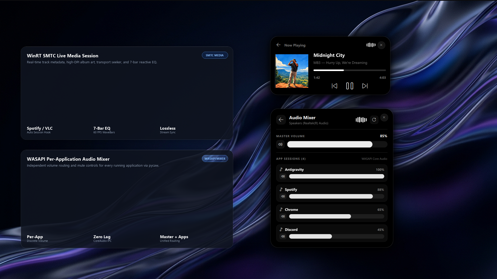
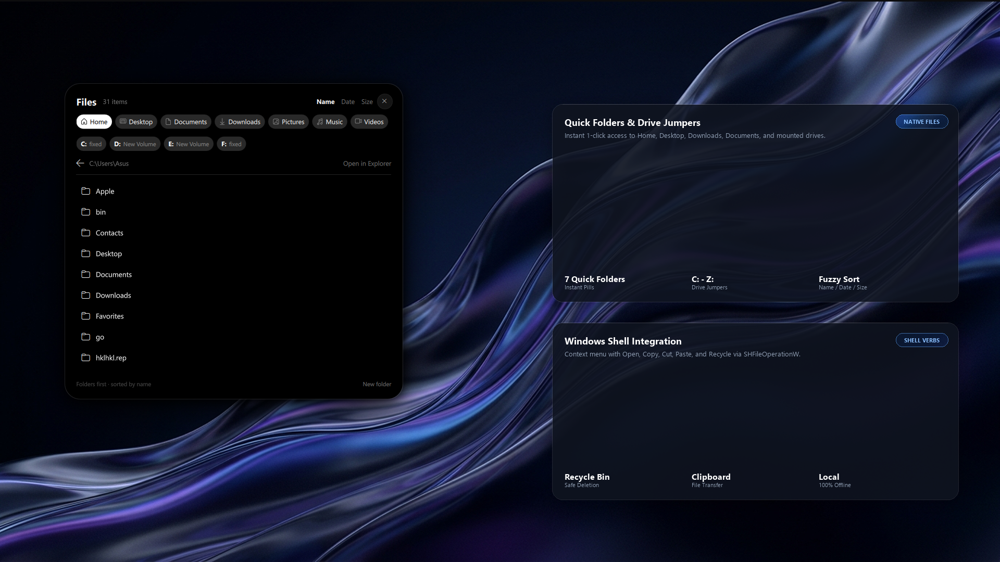
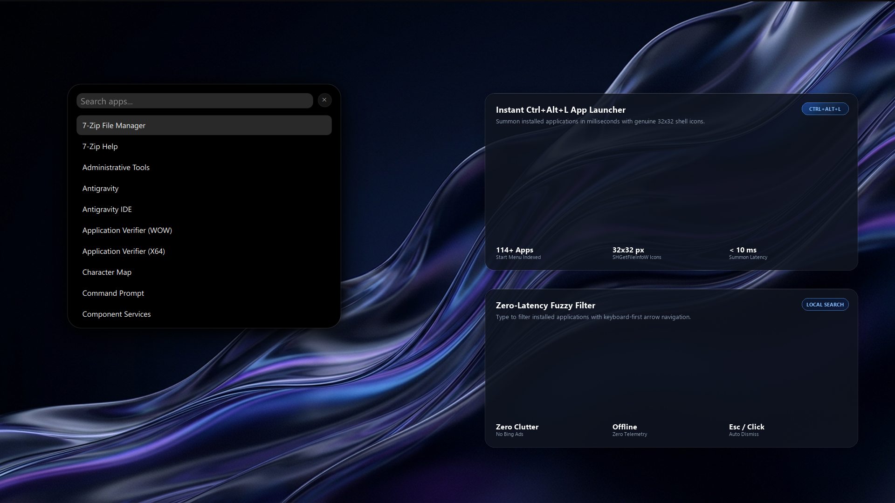
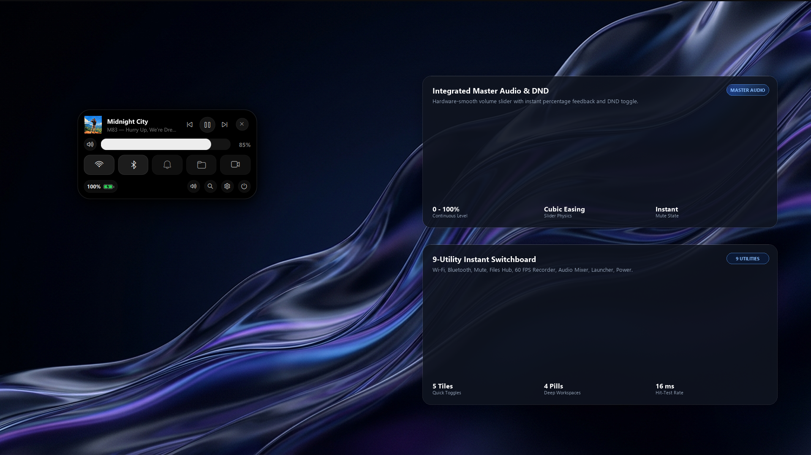
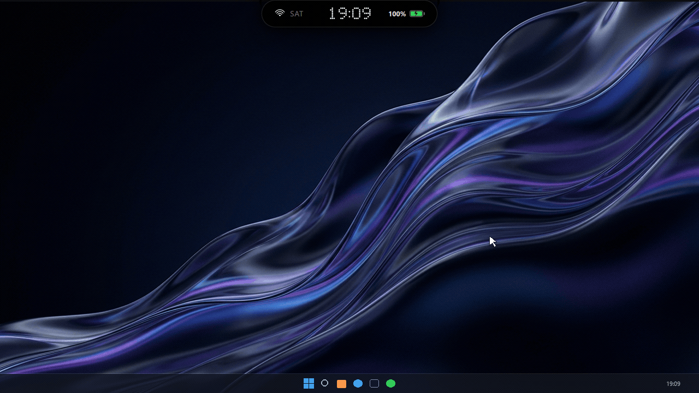
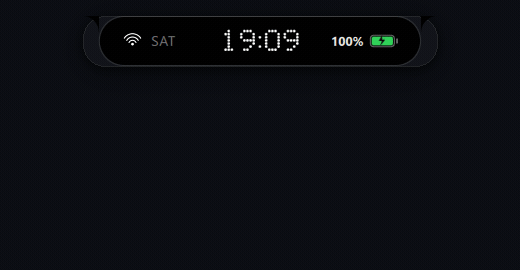
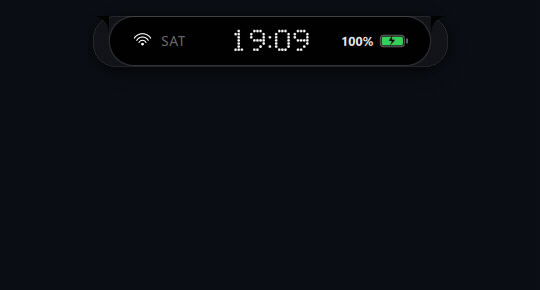
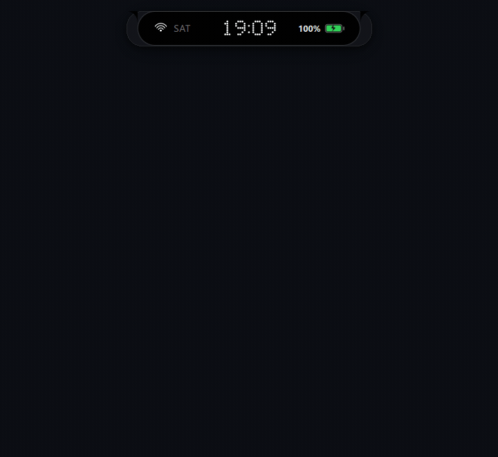
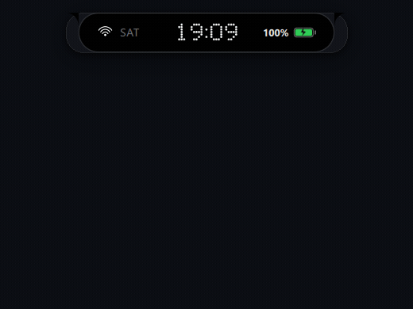
| Component | Authentic Dimensions | Backing Technology | Status |
|---|---|---|---|
| Top Notch Capsule | 354 × 50 px | PySide6 / QML Frameless Hardware Notch | Verified Authentic |
| Right Upright Dock | 68 × 198 px | Dynamic Edge Relocation Engine | Verified Authentic |
| Quick Settings Deck | 426 × 213 px | Native Windows Radio & Volume Subsystems | Verified Authentic |
| WinRT SMTC Media Studio | 466 × 228 px | WinRT GlobalSystemMediaTransportControlsSession | Verified Authentic |
| Native Files Hub | 650 × 608 px | Windows Shell Drag-and-Drop & Explorer Bridge | Verified Authentic |
| Start Menu App Launcher | 588 × 525 px | Win32 Shell Link Indexer (Ctrl+Alt+L) | Verified Authentic |
| Settings Switchboard | 314 × 328 px | Dynamic QML Configurator | Verified Authentic |
| Two-Step Safe Power Menu | 426 × 150 px | Win32 ExitWindowsEx & SetSuspendState Guards | Verified Authentic |